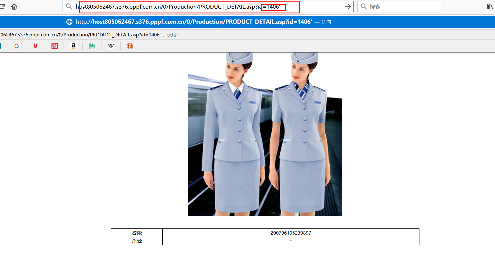

今天写一个sql注入的小例子。
我是在云主机上搭建了一个网站，这个网站存在sql注入漏洞。我们本地用sqlmap来扫描网站的数据库，表，以及字段。猜测admin的用户名和密码，爆破之后得到md5加密后的密码串，百度。得到密码。然后寻找网站的后台，进行登陆。
（小鸟云貌似现在注册有优惠。注册后提供一个一年的云主机。免费的哦）
环境：
· sqlmap（我用的现在最新版）
· python2.7
· （想要测试的同学，可以联系我打开【怒刷一波广告。大家可以来我群675342331】。平常我会关闭。cc的就别想了。免费的机子，性能渣的一批，意淫一下就行了，别想给我搞破坏。）
准备工作
· 首先，安装python2.7，并且添加环境变量。（不会的自行百度）
· 下载sqlmap（网站在国外，我们需要挂代理。没有的同学可以联系我，问我要）
步骤：
1、首先我们先去寻找注入点。
a、打开网站，寻找可能存在sql注入漏洞的页面（关于怎么寻找，百度。或者等我后面的博客）
我们看到，url后面有一个id，这就是数据库查询时候用到的字段。
b、我们点开第一个图片

我们看到url上面id=XXX，对此我们进行测试
c、测试网站（通常是在后面加个 ’ 或者 and 1=1。测试漏洞方法。自行百度，或者等我后续博客）

回车，看返回结果。

👆也有可能我们找的注入点不对，被过滤掉了。

👆我们可以看到，出错了，这就说明，数据库对id=1406‘ 进行了查询。sql漏洞就是过滤不严格造成的。这个错误一看就知道是access数据库的特征。（都是经验）
d、对这个网站进行sql注入。
（1）、打开sqlmap目录，按住shift+鼠标右键，选中在此处打开powershell

（2）、输入命令 python sqlmap.py -u ” –tables 能够看到很多有用信息。-u后面跟注入点，–tables就是列举表。


我们看到测试结果跟我预想的一样，数据库类型是access，上面还会显示注入类型，引擎等信息。最重要的是，他列出了七张表。
（3）、我们测试完成后我们看到他检测到7张表，有一个表名字很敏感，就是admin。我们对admin进行bump看看有没有我们需要的信息。
（4）、我们就猜测可能是这个，并对这个表进行bump。python sqlmap.py -u ” –tables -T admin –dump -T+表名 代表特指某张表。
👆这里我们一路回车就行。

👆这里列出了admin表的信息，可以看到，admin下面对应的admin password 下面对应的是一串balabala。。。
（5）、我们把这串balabala复制，然后百度搜索MD5在线解密。然后你就能看到密码的字符串了。
（6）、我们现在猜测账号是 admin 密码是bendss，但是我们还没有找的后台管理员登录界面。我们猜啊。这个网站首页是0/index.asp 后台我们猜是 0/login.asp 显然我们猜错了 也有可能不在0/，可能在0/admin/ 或者 0/Admin/ 。都有可能。我猜是0/Admin/Admin_login.asp。我真tm机制。一猜就猜到了。

输入我们的账号密码。